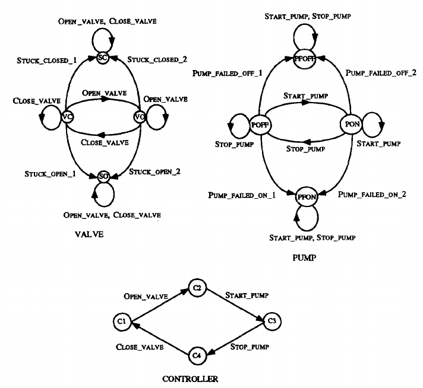
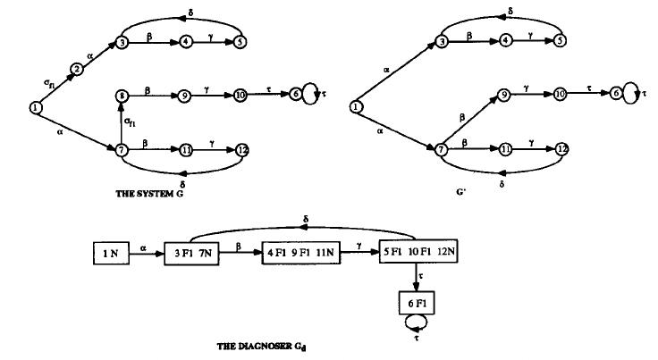
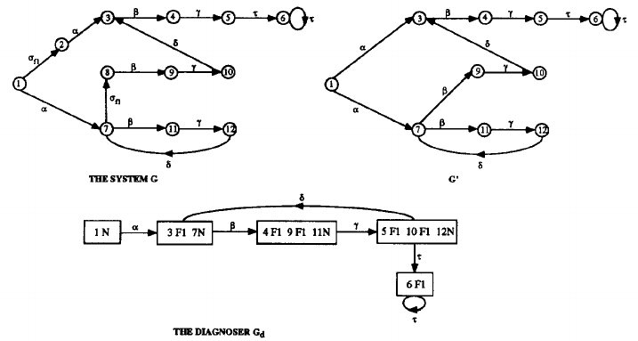
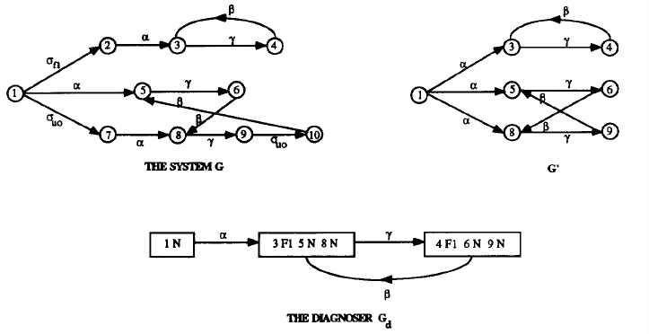
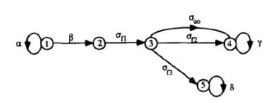

文献内容翻译：可诊断性概念
authors: Meera Sampath, Raja Sengupta, StCphane Lafortune, Member, IEEE, Kasim Sinnamohideen, Member, IEEE, and Demosthenis Teneketzis, Member, IEEE
原文: Diagnosability of discrete-event systems
A. The System Model
待诊断系统通常使用一个 FSM 或生成器（generator）来进行建模。
其中$X$是状态空间，$\Sigma$是事件集，$\delta$是一个部分转移函数，$x_0$是系统的初始状态。系统模型$G$记录系统正常和错误行为。系统的行为使用$G$生成的前缀闭合语言$L(G)$来描述1。此后，我们使用$L$直接表示$L(G)$，$L$是的子集，其中是事件集的 Kleene 闭包2。
$\Sigma$中一些事件是可观的，即它们的发生是被观测到的，其他的是不可观的。因此，事件集可以划分为，其中表示可观事件集，而表示不可观事件集。系统中可观事件可能是以下情况下之一：控制器发出的指令，在执行上述命令后立即读取的传感器读数以及传感器读数的变化。不可观事件可以是错误事件或导致传感器未记录的系统状态更改（见3）。
令表示待诊断的错误事件集。不失一般性地，我们假设，因为一个可观的错误事件显然是容易诊断的。我们的目标是根据系统生成的串来诊断是否有错误事件的发生，其中串中包含的事件均是可观的。在这种情况下，我们将错误事件集划分成多个不相交的集（disjoint set），对应表示不同的错误类型。
用$\Pi_f$表示这个划分。使用$\Pi_f$主要出于以下考虑：
- 1) 仪器不足可能会导致无法诊断每个可能的错误；
- 2) 我们可能不需要唯一标识每个错误事件的发生。我们可能只是想知道一组错误事件集中是否有一个错误事件发生了，例如，当一组错误事件对系统的影响相同时。
此后，当我们写到”类型的错误发生了“，意味着”集合中有错误事件发生了“。
我们假设研究的系统：
- A1) 系统$G$的生成语言是活语言，即$X$中的每一个状态$x$均有定义转移，即系统不会到达一个没有事件标签的点；
- A2) 系统$G$中不存在任何由不可观事件形成的环，即使得，其中$\lVert s\rVert$表示串$s$的长度。
针对$L$是活语言的假设主要是为了研究简单。稍作修改，当该假设放松时，本文的所有主要结果均成立。假设2) 确保了系统生成的观察具备某些规律。由于错误的检测是基于系统的可观转移，我们要求$G$不产生任意长度的不可观事件序列。
在2中，我们详细讨论了用于错误诊断的离散事件系统建模。假设待诊断系统包含许多不同的物理组件以及一组传感器。我们首先为每个独立的组件构建相应的 FSM。这些模型会记录相应组件的正常和错误行为。考虑一个这样的例子，一个由泵、阀门和控制器组成的简单 HVAC 系统。Fig. 1描绘了该系统组件的模型。从组件模型和传感器图开始，然后我们生成了一个复合模型，该模型捕获了组件之间的交互并将传感器图纳入其中。这个复合模型就是我们执行错误诊断的系统$G$。

Fig. 1. Component models for a simple HVAC system.我们在本节的系统模型上总结一些符号和生成器$G’$的结构，以便之后使用。
1) Notation: 空串用$\varepsilon$表示。用$\overline{s}$表示任意串的前缀闭包。$L$的$s$后语言用$L/s$表示，即
我们通常定义投影 1
换句话说，$P$简单地”清除“了串中的不可观事件。逆投影操作$P^{-1}_L$定义如下：
用$s_f$表示串$s$的最后一个事件，我们定义：
即表示$L$中所有以错误类型为的错误事件结尾的串的集合。考虑以及。我们用表示串$s$发生了事件。略微滥用符号，我们用表示对于有，或正式地，。我们定义
用$L(G,x)$表示从$G$中状态$x$出发产生的所有串的集合，我们定义
以及
其中，$Lo(G,x)$表示从状态$x$开始以第一个可观事件结束的所有串的集合。$$L{\sigma}(G,x)$$表示$L_o(G,x)$中以一个特定可观事件结束的串的集合。
2) The Generator G’: 接下来的部分，我们需要特殊构造一个拥有语言$P(L)$的生成器$G’$
$G’$通常是不确定的（nondeterministic），并且它的结构如下
其中，和$x0$先前已经定义过了。$G’$的转移关系由$$\delta{G’}\subseteq (X_o\times\Sigma\times X_o)$$，其定义如下
可以很轻易地验证$L(G’) = P(L)$. Figs. 4-6 展示了如果为$G$三个不同系统构造$G’$。

Fig. 4. Example of system with F1 indeterminate cycle in its diagnoser Gd.
Fig. 5. Example of system with a cycle of F1-uncertain states in its diagnoser Gd.
Fig. 6. Another example of system with F1 indeterminate cycle in its diagnoser.B. Approaches to Defining Diagnosability
我们现在准备定义可诊断性的概念。一般而言，一个语言$L$是可诊断的若它能够在有限确切延迟内，使用记录的可观事件串诊断出任意错误类型的发生。我们将给出可诊断性的两种定义方式，其中第一个定义要比第二个定义严格。我们之后将参考的概念是可诊断性和I-可诊断性。
Diagnosability: 通常，我们定义可诊断性如下。
Definition 1: 一个前缀闭合语言$L$对于投影$P$和$\Sigma_f$上的错误划分$\Pi_f$是可诊断的当
其中诊断条件D
上面可诊断性的定义意味着，$s$是一个以错误事件集中一个错误事件结尾的串，$t$是$s$的充分长后缀。诊断条件D表示系统语言中任何一个与串$st$产生相同投影序列的串必定包含错误事件集中的一个错误事件。这意味着，$s$的每一个连续的$t$都可以用于在有限延迟之内，在具体最多$n$个系统状态转移之后，来诊断错误类型对应错误事件的发生。换句话说，可诊断性要求系统每一个错误事件发生后，再记录更多的可观事件，以便系统诊断该错误事件的发生。
来自同一个错误划分的多错误情况需要特别注意。当一个串$s$中发生同一个错误类型$Fi$的多个错误事件，上面的可诊断性定义不要求每一个错误事件的发生都被检测到。能够在发生第一个错误后的有限多个事件中得出串$s$中发生了错误事件集$\Sigma{fi}$中的错误事件。在后面的部分中， 我们将看到这一特性是如何区分可能的多个错误发生的情况与任何划分集合中没有多个错误发生的情况。
我们展示上面可诊断性概念的一个简单例子。考虑Fig. 2中表示的系统。这里$\alpha, \beta, \gamma$和$\delta$是可观事件，是不可观事件，而是错误事件，是系统的初始状态。如果选择错误划分和，即它不需要区分错误事件和，对于和，上面的系统是可诊断的。另一方面，如果错误划分是，和，则系统是不可诊断的，因为它无法推断出错误事件是否发生。
2) I-Diagnosability: 上面的可诊断性定义要求$L$中的所有串满足诊断条件D。我们现在提出一个宽松的可诊断性定义（术语表示为I-可诊断性），它不需要$L$的所有的串都满足诊断条件D，但适用于那些错误事件后跟与每种错误类型相关的某些指示可观事件形成的串。这种修改是出于对下面实际情况的考虑。例如，考虑一个拥有控制单元的 HVAC 系统。正常模式操作下，每当控制器检测到系统上的热负荷时，它都会发出”open value“（打开阀门）来作出响应，同样，当负载消失时，它会发出”close value“（关闭阀门）指令。假设控制器发生了错误，它无法检测到系统是否出现负荷，因此不会发出任何指令控制。假设在运行期间控制器确实发生了错误，并且进一步假设系统有可能执行任意长度的事件序列，而这不涉及任何指令。在这种情况下，很明显无法诊断任何错误的发生。根据之前的定义，这样的系统是不可诊断的。在修改后的可诊断性定义情况中，我们将”open value“和”close value“分别与指示器事件（“stuck-closed“和”stuck-open”）相关联作为指示事件，并要求系统在确定其可诊断性之前，执行”open value”事件或”close value”事件。在执行对应指示事件之后能够探测到错误事件，则系统是可诊断的，反之，若在执行指示事件之后，仍无法探测到错误事件，则系统是不可诊断的。总结一下，I-可诊断性仅需要在错误事件相关的指示事件发生后，诊断出该错误的发生。
我们首先将$\Sigma_f$中的每一个错误事件与一个或多个可观指示事件相关联。令$\Sigma_I\subseteq \Sigma_o$表示指示事件集，$I_f:\Sigma_f\to 2^{\Sigma_f}$表示指示映射函数（indicator map）。接着，我们选择一个$\Sigma_f$的一个错误划分，使得
额外的限制，对于每一个 $i = 1,\cdots,m$
然后定义
我们现在有一个与每个错误类型相关联的可观指示事件集（更多关于实际系统指示事件选择的内容见2）。
我们现在给出I-可诊断性的定义。
Definition 2: 一个前缀闭合活语言$L$对于投影$P$，$\Sigma_f$上的错误划分$\Psi_f$和指示映射$I$是I-可诊断的当
其中诊断条件D为
注意表示$L$中所有以集合中的一个可观事件结尾的串的集合。因此，对于I-可诊断性，它要求在中指示事件发生后，最多进行次系统状态转移推断出错误类型的错误事件的发生。

Fig. 2. Example of system with multiple failures.考虑如 Fig. 2图中的系统。假设其选择的指示事件集如下：和。系统的错误划分为：和。对于，系统是I-可诊断的。应该注意的是，尽管不可能推断指示事件对应错误事件的发生，即$\delta$没有跟踪该错误事件，但这并不违反I-可诊断性的诊断条件。
1:P. J. Ramadge and W. M. Wonham, “The control of discrete-event systems,” Proc. ZEEE, vol. 77, no. 1, pp. 81-98, 1989.
2:J. Hopcroft and J. Ullman, Introduction to Automata Theory, Languages, and Computation. Reading, MA: Addison Wesley, 1979.
3:__, “Failure diagnosis using discrete-event models,” Dept. EECS, Umv. of Michigan, MI 48109, 1994, Tech. Rep. CGR 94-3. (Accepted for publication% IEEE Trans. Conrr. Syst. Tech..)